Virtual Environments
1 Introduction

Virtual environments allow us to execute code while accounting for software/package version differences we have on our local machines. This repo uses virtual environments to configure a user’s R and Python software and packages to the repo’s specific package versions.
For example, say you have dplyr version 2.0 but this repo uses dplyr version 1.1, you may not be able to run the scripts as intended by the author since the functions in dplyr 1.1 may be different than in 2.0. The virtual environment will allow a given user to use only this repo’s version of dplyr so they can run the code as intended.
There are two different virtual environments for this repo, one for R and another for Python. Your workflows for opening R and Python and how you install packages needs to utilize the virtual environments so that all machines are able to use your code.
2 Python - Conda Environment Setup
This repo has a file named environment.yml. It contains a list of all packages and versions used for Python software. This file can be used as a set of instructions for your local machine when configuring your local environment.
2.1 Step 1: Set Up Anaconda
You should already have Anaconda installed on your machine if not..
under construction
2.2 Step 2: Open Anaconda Prompt
You may have different Anaconda prompts (prompts aligned with different shells, like PowerShell, bash, etc). There should be a generic Anaconda prompt. Open that one:

If the first line in the prompt doesn’t start with (base), write:
conda deactivate
and it will bring you back to your base environment.
2.3 Step 3: Change Directories
Change the directory of the prompt to the repo’s directory. The code is
cd C:/Users/XXXXXXX/Projects/Sequencing_2.0
If you are already in your user directory, you can just type
cd projects/sequencing_2.0
capitalization doesn’t matter
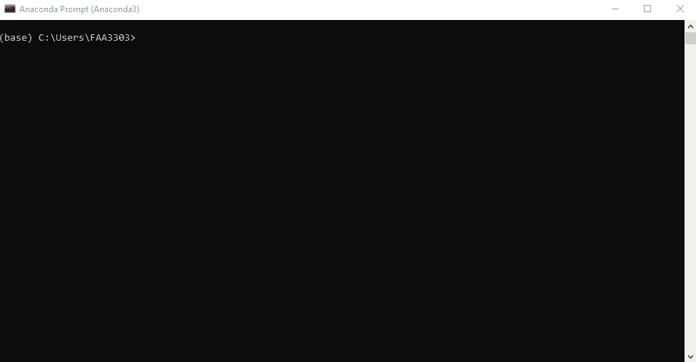
Notice that the folder path is now changed to the sequencing repo folder.
2.4 Step 4: Copy the repo env
Now we’re ready to create a new environment based on the repo’s environment.
Type: conda env create --name seq_env --file=environment.yml
Note that how you name your environment doesn’t really matter, but name it something that resembles the repo. This will save the headache of having random environments for random repos that you can’t remember..
conda env createwill create a new environment in yourC:/Users/XXXXX/Anaconda3/envsfile path--nameor-nwill name that environment, in this caseseq_env--file=environment.ymlthis code will take the file in the sequencing 2.0 repo and use it to create this environment. It is essentially a copy of the software versions in the file.
Note: I sped up the gif below. The whole process may take a few minutes
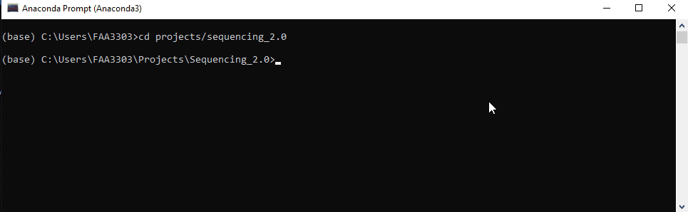
2.5 Step 5: Activate the environment
You can switch between environments in the conda prompt or in a programming IDE (or both? idk). To activate and switch the env, write:
conda activate <env_name>
in this case
conda activate seq_env
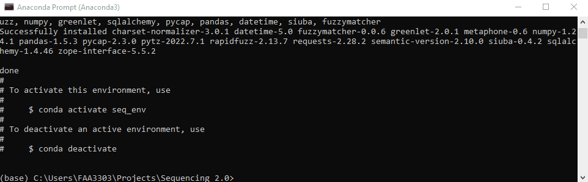
The environment your in will show on the left of the prompt message. In this case it says (seq_env) instead of (base). That way you know what env your working in
3 Python - Programming Setup
Now that your virtual conda environment is set up, let’s set up your programming IDE to be able to recognize your environment.
3.1 IDE Setup - VS Code
VS Code has a lot built in to use a conda environment. Since your env is already activated, if you have VS Code installed, you can type
code
into the anaconda prompt and it will open a VS Code window

3.1.1 Step 1: Select a Python Interpreter
First we need to select a python interpreter, which is in our env. On your keyboard, press
CTRL+SHIFT+P
This should bring up a window with an option that says Python: Select Interpreter. You may need to search for it.
Click it and you should see your new environment seq_env in the list. Click it
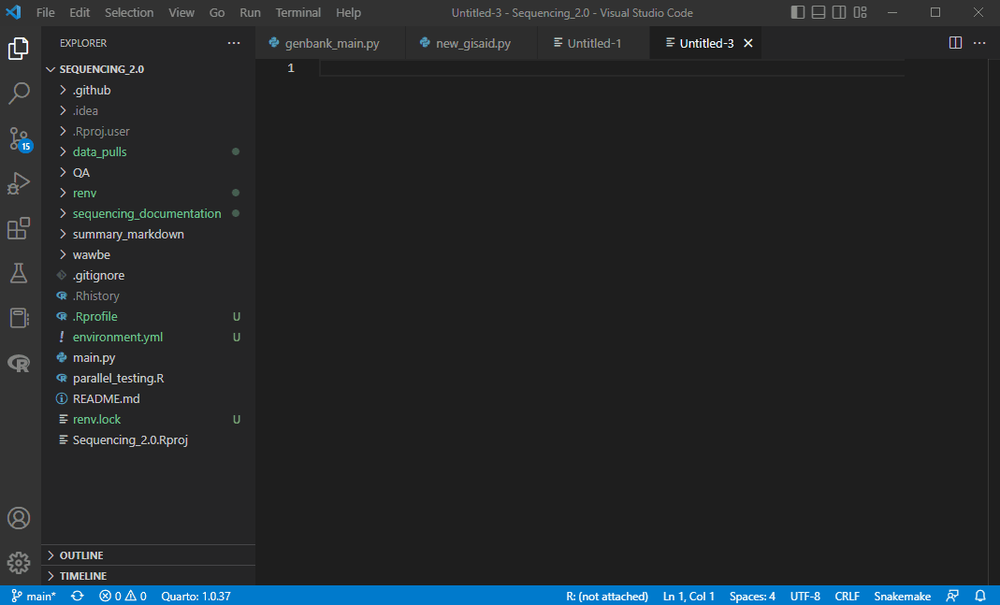
3.1.2 Step 2: Write code
Now your VS Code is using your environment and the python version/packages in that environment. Check to see that your terminal is using the correct env.
Open the terminal (terminal > new terminal) and confirm that you are in a cmd prompt in the terminal. On the right side of the terminal it should say cmd. If it says powershell or something else, let’s change it.. See the pic below. There’s a drop down that gives you shell types. Change your default to Command Prompt
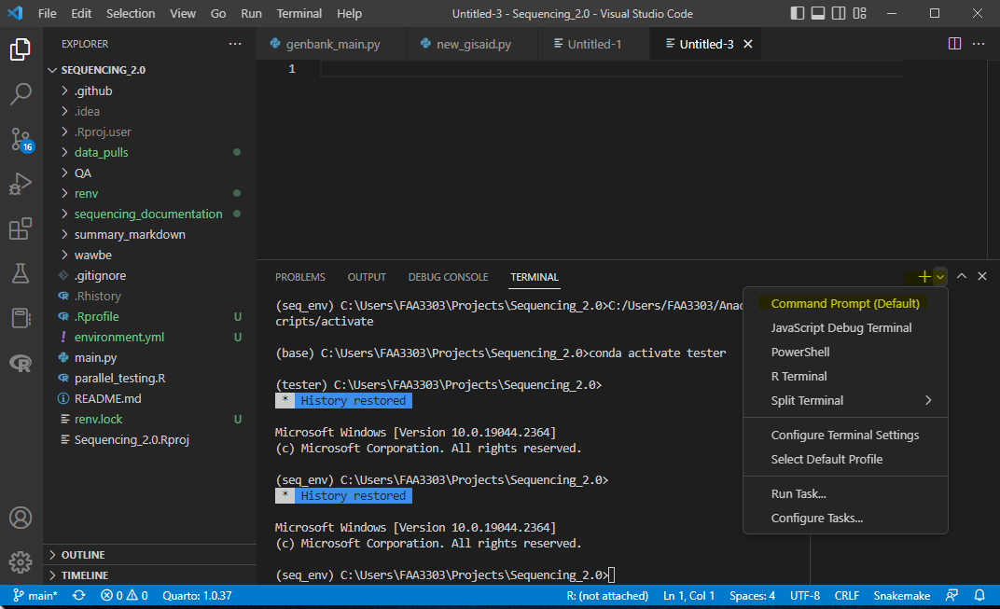
Also notice in the picture that my environment now switches to seq_env. Yours should do the same. You should now be able to run code in a python script. Notice that your terminal will change to run python. If you get an error, write python in the terminal and hit enter. It will change your terminal a little. Now you can run python code and it will output to this terminal.
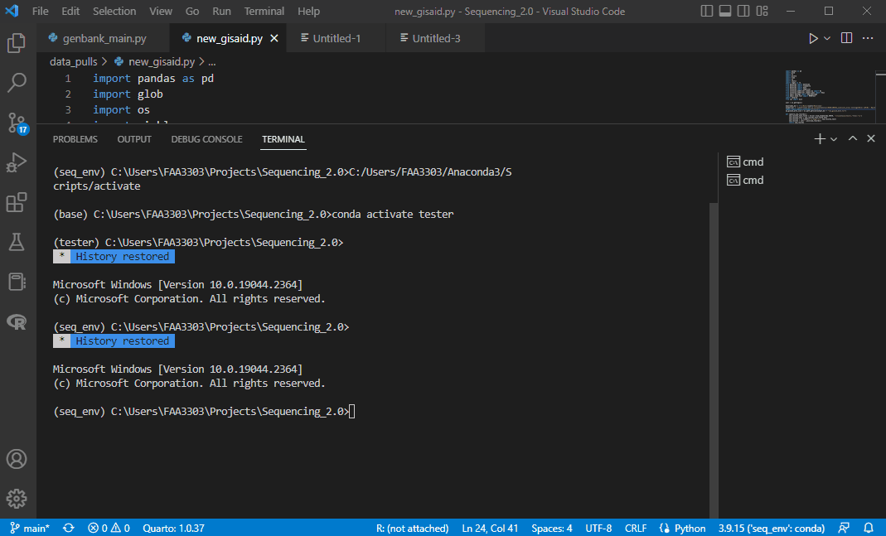
3.2 IDE Setup - PyCharm
PyCharm also works great with a conda environment.
3.2.1 Step 1: Select a Python Interpreter
You may also be able to open a PyCharm window from an Anaconda prompt like with VS Code (if it’s installed in your env). To do so, write pycharm in the prompt and it should open a new window with the env activated.
If that doesn’t work, open PyCharm and on the bottom right there is a python version and interpreter selected. Click it and open “Add New Interpreter” > “Add local interpreter”. This opens a new window. Click “Conda Environment” and under “Interpreter” click the dropdown. You should be able to see your new environment there. If not, click away and click the dropdown again. It’s weird sometimes.
Then click okay. Close and reopen the Python Console window and it should have your environment path for the python.exe. Also, the Python Libraries window should have all of the libraries in your environment now.
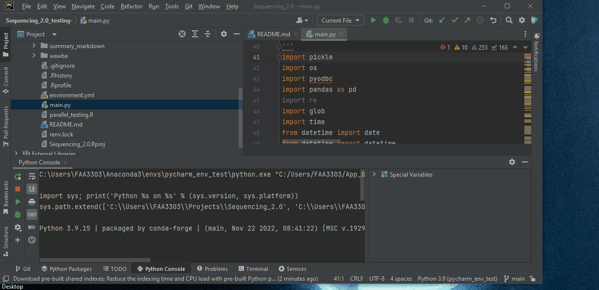
Notice that now there are a list of interpreters for you to use. You can now switch back and forth between environments. This is great if you have other repos to use or want to test out new packages that aren’t in the main environment.
4 Python - Installing New Packages
Let’s say you want to add a new python package to the repo. I recommend doing this in an Anaconda prompt and then saving it over the environment.yml. Then you can push the new environment.yml with the new changes to github. Use these steps:
4.1 Step 1: Install a new package
Go to the Anaconda prompt, make sure you’re in the repo file path (cd projects/sequencing_2.0) and make sure you’re in the right conda env (conda activate seq_env).
Now, install the package. Usually packages can be installed with pip install or conda install or conda install -c conda forge <package>. This depends on the packages. Some need pip, others need conda. Google it to find out. Here i’m going to download a package from NCBI to demonstrate. The package is called ncbi-datasets-cli.
- This package uses
conda-forgeto install. Type inconda install -c conda-forge ncbi-datasets-cli - It will give you a message Y/N to confirm. Type “y” and enter
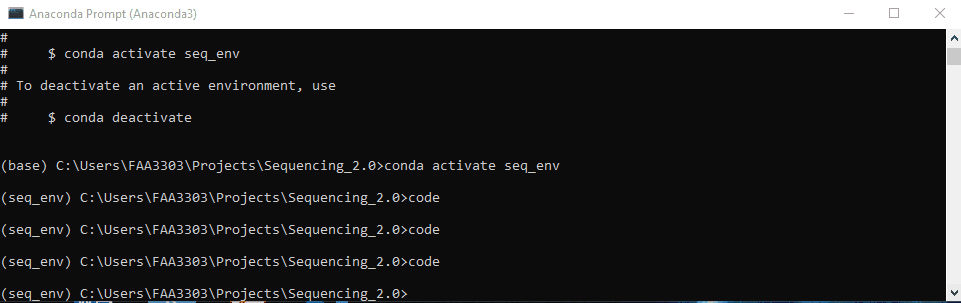
4.2 Step 2: Save the package to the repo
Now we need to save this package to the repo’s environment.yml
- Type
conda env export > environment.yml - Since the package is in your environment, this code is exporting your new environment to repo’s one.
- Now push to github
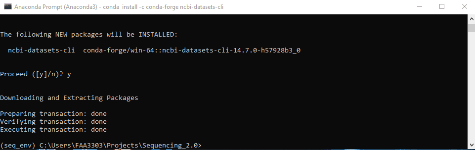
5 R Package Management -renv
Managing R packages is much easier than managing Python packages. The R environment uses a package called renv. It will save a list of packages to a lock file, similar to environment.yml. Then, every time you or another teammate opens the R project in your repo the renv package will activate in the background and determine if any packages are not aligned with the repo’s lock file. It will ensure that everyone is using the same package versions
Your repo should have a .Rproj file at the root of the directory. If it doesn’t you can create it by opening Rstudio > File > New Project... > Existing Directory (or New Directory) Make sure .Rproj files are NOT in your .gitignore
5.1 Creating renv in a project
5.1.1 Step 1: Open the .Rproj in your repo
The R project will open up Rstudio at the root of you directory path.
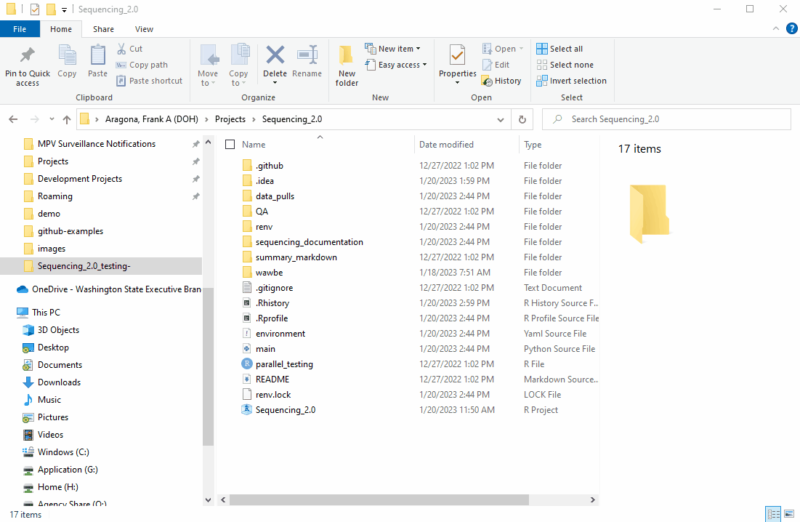
5.1.2 Step 2: Initialize renv for the repo
Now that we’re in the root of your repo directory, let’s initialize renv.
First install renv - install.packages("renv")
Then in your console write renv::init() and run it.
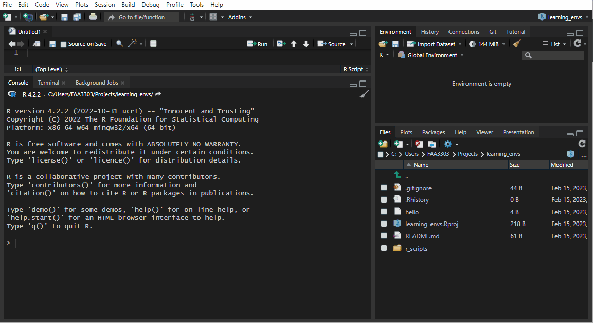
If you already have an existing repo, you will probably see warnings and errors in the renv::init like I did in the gif above. Not to worry! Read the warnings and follow the instructions. Usually you will need to re-install a package. If you get this warning:
These may be left over from a prior, failed installation attempt.
Consider removing or reinstalling these packages.- Then run
renv::install("THAT PACKAGE"). It will install the package again, - and then you need to update the lock file (more on that later) by running
renv::snapshot().
Now the package will be installed correctly
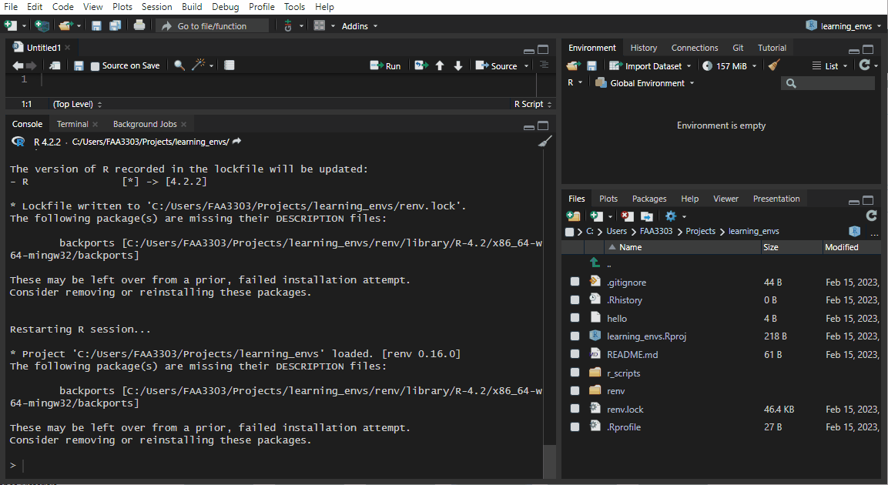
renv::init() will:
- Search through all R scripts in your repo and find all packages used
- Create a snapshot of those packages
- Save all packages in the repo in a new
renvlibraries path (similar to your C drive R libraries paths) - Create a
.gitignorewithin therenvlibraries path so that you don’t get spammed with thousands of libraries in your git commit - Create a lock file - this is like the
environment.ymlfor conda. Think of it as instructions for which packages your repo is using - It also saved things like an
activateR script which will activate thatrenvevery time the repo is opened from the.Rproj
5.1.3 Step 3: Push to Github
Now look at your git stage and you will see all the files renv created.
We have
.Rprofilethat contains anrenv activate.Rscript - this will activate the repo’srenvevery time the project is opened- The
renv.lockfile shows information on each package used in the repo and is used to update collaborator’s environments to match the lock file. renv/.gitignoreI don’t feel like explaining this one right now - i’ll write more laterrenv/activate.Rthis will activate the env whenever the R project is openedrenv/settings.dcfI have no clue what this is
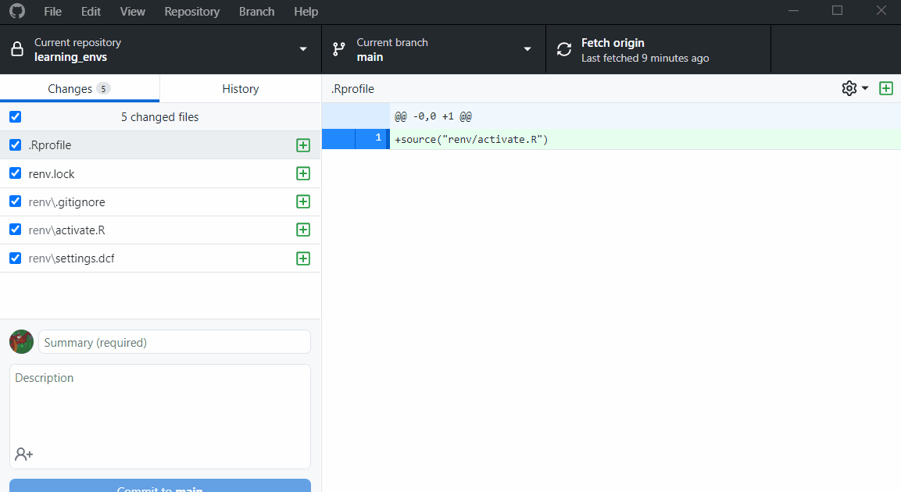
5.2 Using renv in a project
5.2.1 Step 1: Open the .Rproj for your repo
Any time you need to code or run code from the repo, open up the .Rproj file that contains the sequencing 2.0 project. In your file explorer, go to the repo and open Sequencing_2.0 .Rproj
This will open up an R window with the repo file path as a root directory. It will also utilize the renv. Your console should say something about renv, like this

5.2.2 Step 2: Load renv packages
The first time you use renv you will need to configure it to your local machine. To do this, type:
renv::restore()in your console.- This will create a new environment for your R in your local machine using the lock file packages.
Now you’re ready to use the scripts! Way less complicated than conda
6 R Installing New Packages
If you need to install a new package and want to put it in the repo, you will need to update the lock file. To do this:
renv::install(),pak::pkg_install("<PACKAGE_NAME>")(the safe way) or eveninstall.packages()renv::snapshot()this will overwrite the lock file with the packages you added- Then push to github
There may be version dependency issues when installing a package and running a script. You may need to use renv::history() to see the previous hash of the lock file and use renv::revert() to revert the lock file back to its previous, stable state. More on this here https://solutions.posit.co/envs-pkgs/environments/upgrades/
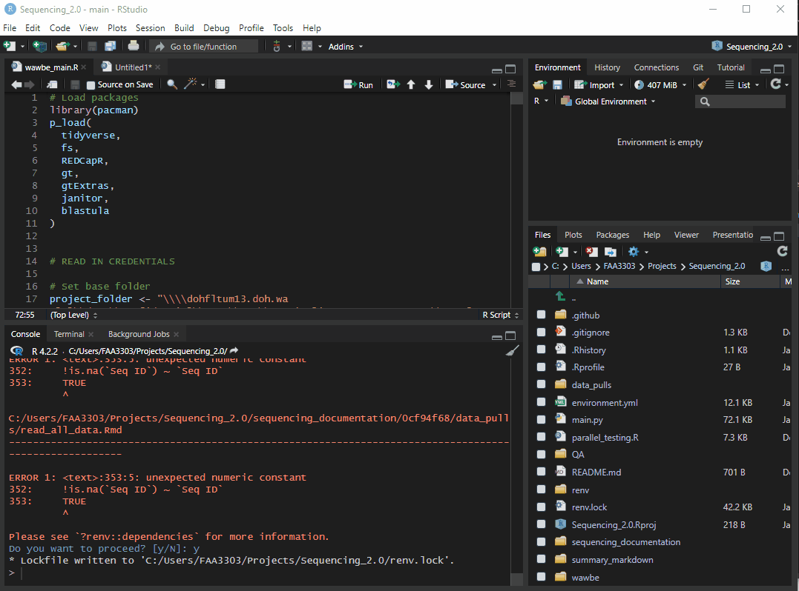
The video at the bottom of this page explains in detail renv and its capabilities https://solutions.posit.co/envs-pkgs/environments/upgrades/
7 Using Reticulate with Conda Env
Now that your R and Python environments are set up, if you have code that uses the reticulate package in R, it might still be pointing to your base Python environment. So, if you need to write python code in R (using reticulate), the code may break. Here’s what you need to do to make sure your reticulate python path is pointing towards your conda environment:
- Open an anaconda prompt
- Activate your env and then write
where pythonand it will provide you with a python.exe for that particular env. Copy that path - Open the
.Rprofilefile in your repo and add this code:Sys.setenv(RETICULATE_PYTHON = PATH_TO_ENV_PYTHON))- Note, if you have other team members, make this code flexible to their usernames. It could look something like this
Sys.setenv(RETICULATE_PYTHON = file.path(Sys.getenv("USERPROFILE"),"Anaconda3/envs/seq_env/python.exe"))whereSys.getenv("USERPROFILE")will addC/Users/XXXX/and it will automatically add the user’s name
- Note, if you have other team members, make this code flexible to their usernames. It could look something like this
- Now restart your R
- Open back up R and without running any other code or loading any libraries run
reticulate::py_config()in your console. This should now show your conda environment path being used for reticulate